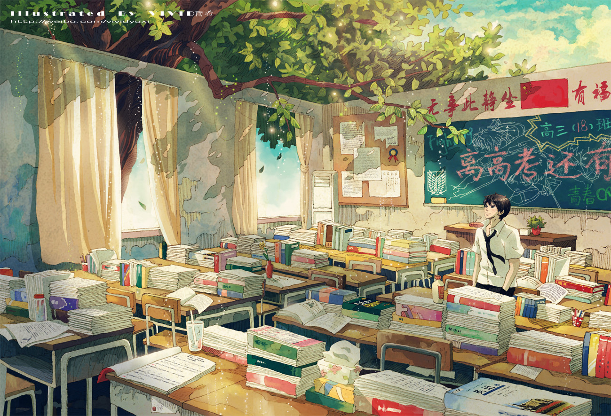

STORY
第一章
梦之逆转
- “诶？我什么时候成为了律师了？！”
- “我是你的助手西门吹，怎么不记得我了？”
- 就这样，学生杀害老师的案件就这样开始审理了。
- 案件变得清晰起来，杀人案背后隐藏着巨大的阴谋。
- 就当真凶被逼问至绝境之时……
第二章
似曾相识
- 梦境中的事件居然真实上演了，连自己的同学都成为了嫌疑人。
- “再这样下去，他就被当成真凶带走了，怎么办！李云萧？”
- 好在处理现场的警官认识李云萧，李云萧只能硬着头皮帮助破案。
- 现场留下的线索都对我们不利，问题在哪里？事情的真相究竟如何？
- “苗星刃，你怎么不早来作证，你的证词可正是我们反击的武器！”
- “没错，真正的凶手是……”
第三章
日常的非日常
- 就要到学校的社团文化节了，早上在书法社发生了诡异的盗窃案。
- “钥匙和密码只有我知道，别人是怎么打开这个保险箱的呢？”
- 西门吹带来的事件，让李云萧耗费了一天的时间，搜查现场，寻找线索。
- “西门吹，我们也许从一开始就掉入了设好的陷阱。”
- 今天早上，在书法社究竟发生了什么事情？
第四章
时间回溯
- 西门吹认识的学妹家里开了大型宴会，邀请她参加，西门吹顺带拉上了李云萧和苗星刃。
- 巧合的是，那人正好是书法社的成员，早些就知道李云萧帮助书法社的事情。
- 但不幸的是，在宴会的过程中发生了命案，家中的女主人成为了嫌疑人。
- 学妹请李云萧证明其母亲清白，恰好赶来现场的又是梁警官，李云萧又当起了侦探的角色。
- 尽管前期搜查成功证明了母亲的清白，但是寻找真凶之路不久便陷入了瓶颈。
- 线索全无之时，苏忆梦找到了李云萧，告诉了他自己的身世之谜……
第五章
无法离开的一日
- 成功解决宴会命案后，西门吹拉着俩人成立了新的社团，同时苏忆梦也加入了其中。
- 周末早上的一通电话，西门吹约三人在外相约见面，但是不幸发生了。
- 苏忆梦在那一天没能按时赴约，下午李云萧得知了噩耗，来的路上发生而来事故。
- 沉浸在悲伤之中的李云萧，第二天，来了一通电话，又是西门吹。
- “难道你们都忘记昨天发生了什么了吗？”
- “你可能是遇上了时间诅咒了……记住诅咒只能重复9次！”
- “没关系，还有机会，知道轮回继续，就有办法阻止苏忆梦的死亡”
- 李云萧决定避免苏忆梦的死亡，期间他得知了时间诅咒的全部。
- 李云萧跳入循环，与时间因果战斗。
第六章
暗淡的星光
- 苗星刃受儿时玩伴邀请参加观看话剧团表演，正值其父亲团长过生日。
- 在剧场偶遇了同样在剧场的梁警官，小王和杨队长。
- 没想到舞台演出过程中出现了意外，演员因此而砸伤。
- 团长大怒，把矛头指向了剧组的成员，但是女儿却阻止了父亲。
- 团长千金想请李云萧帮忙证明所有团员的清白，找到事故的原因。
- 但是调查过程中，李云萧不幸受伤，苗星刃便代替李云萧搜查。
- 好在最终结果只是场误会的意外，同时苗星刃也赢得了玩伴的好感。
- 事后，西门吹质问为何假装受伤，李云萧笑笑……
第七章
他校奇遇记
- 到了两校联谊的时刻到了，西门吹与苗星刃同时收到了德言高中的邀请。
- 正值某高中学生会缺少社团代表参与，于是李云萧一行人跟随参加。
- 结果在交谊会上发生了怪盗事件，怪盗在学校间已经发生已久。
- 但是怪盗并没有犯下滔天的罪行，就算有物品丢失也会第二天返还。
- 校方曾经请警察来破案，但是警察也被戏耍，只好作罢。
- 正好有人趁着怪盗犯下另外一起事件并嫁祸怪盗。
- 学生会副会长请李云萧一行人证明怪盗清白，李云萧疑惑但是接下任务。
- 在调查过程中，李云萧渐渐得知怪盗身份，同时答应替其隐瞒。
- 结果发现校方监守自盗，警方抓获真凶，怪盗也得以继续表演“犯罪”。
第八章
堕落的双子
- 李云萧接受哥哥邀请参加富豪寿宴，并叫上了所有人。
- 苏忆梦的母亲同样受邀请出席带上了自己的三个女儿。
- 话剧团团长同样受邀出席，富人母校德言高中，校长带领学生会成员出席。
- 同时警方杨队收到恐吓，但是迫于压力不能出警，只能同梁警官与小王一样便衣出席。
- 宴会开始没多久会场断电，陷入了恐慌。同时发生了恐怖袭击事件。
- 由于会场进入时经过安检，警方没有带有武器，只能听从命令。
- 会场内所有人便被蒙眼带到了富豪家地下世界，迷宫般的复杂。
- 此时众人开始恐慌，暗地里，李云萧与认识的人一起开始计划脱离险境。